Ciclista in zona isolata
Una curva su una strada di collina, una caduta, nessuno in giro. Il ciclista è a terra e non riesce a prendere il telefono.
EU-LS, la Piattaforma Salva Vita Europea, unisce un dispositivo NB-IoT + NB-NTN (terrestre e satellitare) a una piattaforma IoT multitenant che i partner offrono ai propri utenti: rileva cadute e SOS, localizza e allerta chi può intervenire.
Per comprensori, noleggi, assicurazioni, operatori e aziende. Progetti pilota aperti.
Spesso chi cade è da solo, non riesce a chiamare o non sa dire dove si trova. I minuti persi diventano il vero rischio.
Una curva su una strada di collina, una caduta, nessuno in giro. Il ciclista è a terra e non riesce a prendere il telefono.
Una deviazione fuori dal tracciato battuto, poi un urto. Nessuno lo ha visto uscire e nessuno sa dove cercarlo.
Valle profonda, alta quota, batteria del telefono finita. Proprio quando serve chiamare aiuto, la rete terrestre non arriva.
EU-LS nasce per i momenti in cui la persona non può chiedere aiuto da sola.
Il dispositivo EU-LS è NB-NTN capable: usa la rete NB-IoT terrestre e, dove la copertura finisce, invia l'allarme via satellite con lo standard 3GPP NB-NTN. Stesso protocollo, stessa piattaforma.
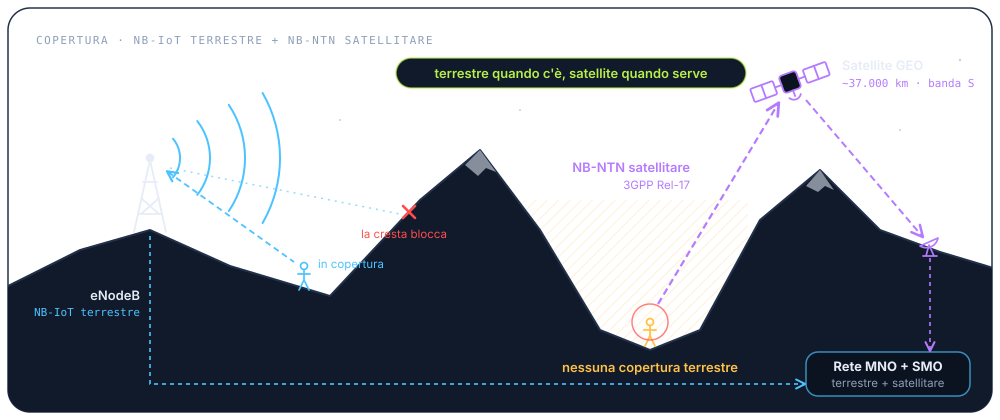
Il dispositivo agisce da solo e non aspetta lo smartphone. La piattaforma trasforma un segnale in un incidente da gestire.
Il sensore inerziale riconosce una caduta o un urto anomalo. In alternativa, l'utente preme il pulsante SOS.
IMU → evento: FALL_DETECTED | SOS_PRESSEDIl ricevitore GNSS calcola la posizione. All'evento si aggiungono velocità e ultimo movimento.
GNSS fix · lat/lon · velocità · timestampL'evento parte su NB-IoT terrestre o, dove manca copertura, su NB-NTN via satellite. Il telefono dell'utente non serve.
CoAP CON · DTLS · UDP 5684 · JSONIl CoAP Gateway conferma la ricezione con un ACK; la piattaforma applica le regole del tenant e dello use case e apre un incidente.
ACK 2.04 · rule engine (tenant) → incident OPENLe notifiche raggiungono App, contatti di emergenza e centrale operativa. Ognuno vede la stessa posizione.
notify → app · contatti · dashboardL'operatore segue la mappa live e consulta lo storico. A soccorso completato chiude l'incidente.
incident: OPEN → IN_CORSO → CHIUSODigital Bear fornisce dispositivo, piattaforma e API. Il partner offre il servizio con il proprio brand, le proprie regole e la propria dashboard. L'utente finale riceve protezione, App e SOS.
Una piattaforma multitenant già funzionante, costruita su componenti open source solidi e pensata per milioni di messaggi piccoli: dal pacchetto UDP all'API del partner.
← scorri il diagramma →
Su NB-IoT e soprattutto su satellite ogni byte costa banda, energia e denaro. Oggi EU-LS invia JSON su CoAP/DTLS/UDP, sia su rete terrestre sia su NTN: già così il traffico si riduce rispetto a HTTPS e un trasporto UDP senza connessione diventa una consegna confermata dalla piattaforma. In fase 2 il passaggio a CBOR ridurrà ancora il payload.
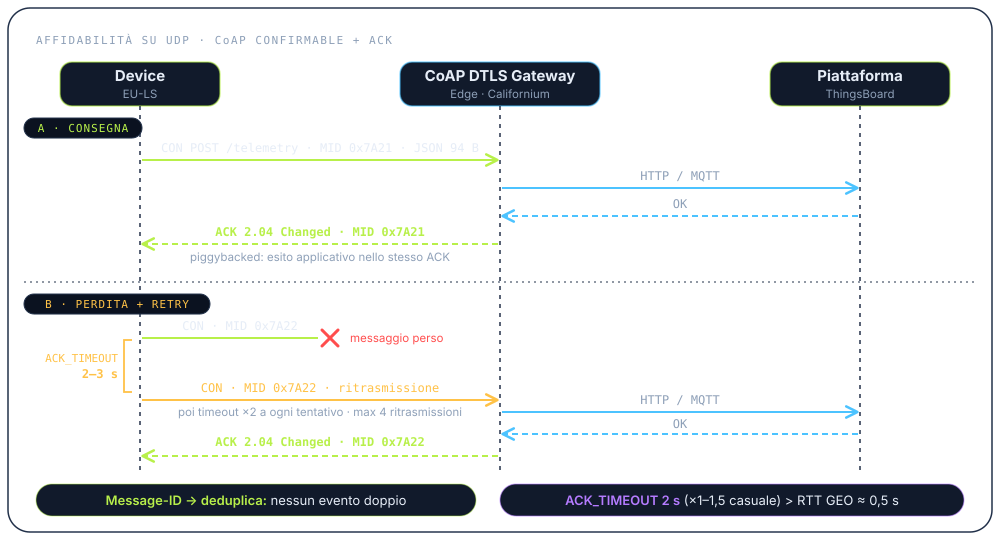
Il passaggio da JSON a CBOR (payload binario) non è ancora implementato: verrà attivato quando la dimensione dei pacchetti inizierà a pesare sui costi del collegamento NTN o a causare frammentazione. Il design del gateway prevede già la validazione di entrambi i formati, quindi il cambio resta confinato a dispositivo e gateway.
Esempio calcolato su un evento di caduta (id, tipo, lat/lon, velocità, batteria, timestamp). Byte di rete su IPv4: stima indicativa, esclusi gli handshake. Timer CoAP: valori di default RFC 7252 / Eclipse Californium.
Questo è il prototipo funzionante di EU-LS. Ogni componente ha un compito preciso.
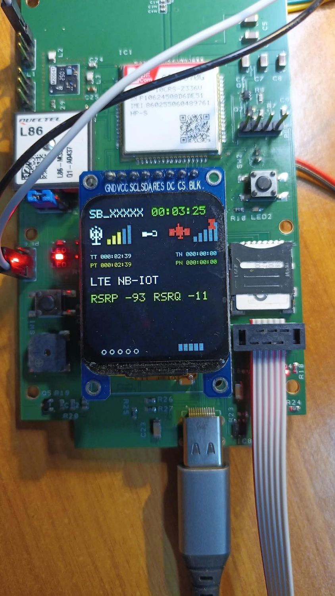
NB-IoT terrestre e NB-NTN satellitare nello stesso modulo.
Antenna integrata e più costellazioni per una posizione affidabile.
Riconosce cadute e urti anche se l'utente non reagisce.
Mostra ID, sessione, segnale e fix satellitare a colpo d'occhio.
Un gesto fisico e immediato per chiedere aiuto.
Confermano l'invio dell'allarme e segnalano lo stato del dispositivo.
Registra un log locale degli eventi, utile per analisi successive.
Alimentazione e ricarica con un connettore standard.
La roadmap 3GPP porta la connettività satellitare negli smartphone. Quando i telefoni NTN saranno diffusi e il costo del collegamento satellitare non sarà più un freno, il telefono potrà sostituire il dispositivo. La piattaforma EU-LS sarà già pronta e integrata.
Device NB-IoT + NB-NTN e smartphone LTE/NR, entrambi integrati con piattaforma e dashboard.
Device NB-IoT + NB-NTN, smartphone LTE/NR e i primi smartphone LTE/NR + NTN, tutti sulla stessa piattaforma.
Smartphone LTE/NR + NTN + 6G integrati con piattaforma e dashboard. Il dispositivo dedicato non serve più.
Distribuzione del valore tra dispositivo e piattaforma (70/30 → 100): visione strategica Digital Bear.
Da 70% dispositivo + 30% piattaforma a 100% piattaforma. Senza un hardware dedicato spariscono i costi dell'asset fisico, mentre restano tenant, dati, regole e integrazioni costruiti nel tempo.
Dispositivo, rete e piattaforma restano gli stessi. Per ogni use case cambiano regole, dashboard ed esperienza utente.
ID dispositivo SB_XXXXX
Comprensori e sciatori
EU-LS non è un ARTVA e non sostituisce i dispositivi di ricerca in valanga.
Hai un altro scenario? Parliamone.
La centrale operativa ha il quadro completo. L'utente e i suoi contatti sanno cosa sta succedendo.
Le schermate sono illustrative; le interfacce reali sono in sviluppo.
Riepilogo del prototipo attuale. Alcuni valori sono ancora in fase di validazione.
| Connettività | NB-IoT terrestre + NB-NTN satellitare (3GPP Rel-17, GEO, banda S) · modulo SIMCom SIM7070G HP-S |
|---|---|
| Protocollo | CoAP su DTLS / UDP 5684 · payload JSON (CBOR in fase 2) · messaggi Confirmable con ACK · ACK_TIMEOUT 2 s, max 4 ritrasmissioni |
| GNSS | Quectel L86 · multi-costellazione · antenna patch integrata |
| Sensori | Sensore inerziale (accelerometro / IMU) per cadute e urti |
| Interfaccia | Display TFT a colori · pulsanti fisici (SOS / funzione) |
| Allarmi | Automatici (caduta/urto) e manuali (SOS) · buzzer e LED di stato |
| Storage | Slot microSD per log locale |
| Alimentazione | USB-C (alimentazione e ricarica) · batteria [DA CONFERMARE] |
| Autonomia | [DA CONFERMARE] |
| Grado di protezione | [DA CONFERMARE] |
| Edge | Eclipse Californium + Scandium · anti-DDoS · rate limit · load balancer · CoAP DTLS Gateway (PSK / X.509) |
| Core | ThingsBoard CE + PostgreSQL · rule engine · dashboard · multitenant |
| Integrazione | NBI con REST API · HTTP REST / MQTT · App smartphone LTE/NR |
Specifiche riferite al prototipo. Possono cambiare nella versione di produzione.
Gestisci un comprensorio, un noleggio, una compagnia assicurativa, una rete mobile o un'azienda con lavoratori isolati? Attiviamo il tuo tenant e costruiamo insieme un progetto pilota.
Ti rispondiamo con una proposta concreta.